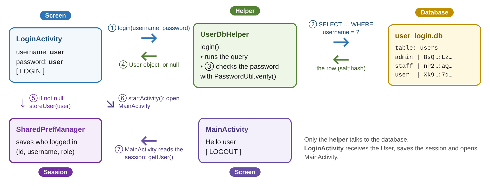
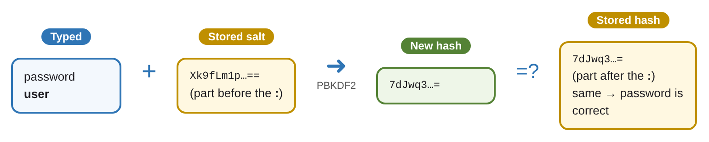
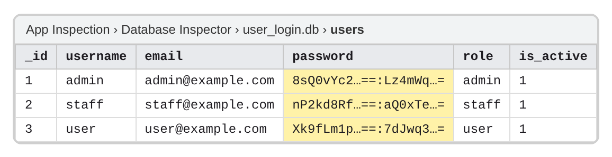
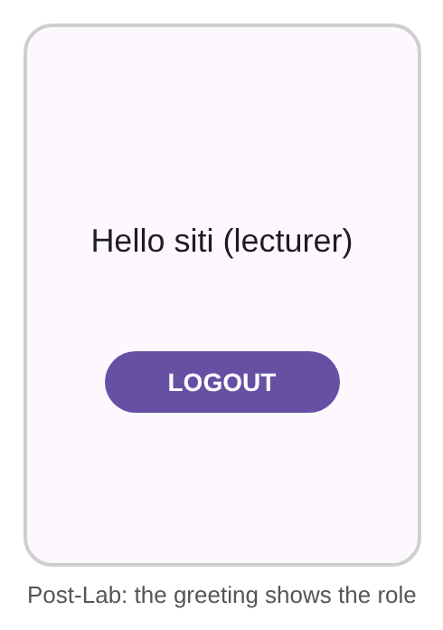

Introduction
Lab Activity 8 · Week 9 · CSC557 Mobile Programming
Objectives
- Creating a SQLite database and a table with
SQLiteOpenHelper - Adding rows with
ContentValuesand reading them back with aCursor - Storing a password as a hash, never as the text the user typed
- Checking a login with a safe query (the
?placeholder) - Remembering who logged in with
SharedPreferences, and logging out
Duration: 2 hours. You need: Android Studio and an emulator or Android phone.
| Part | What you do | Time | Marks |
|---|---|---|---|
| Activity 1: The login screen | Create the project, the login layout and the User class | 20 min | – |
| Activity 2: Create the database | Build the users table and add three accounts | 30 min | – |
| Activity 3: Check the login | Query the table and check the password | 30 min | – |
| Activity 4: Remember the user | Keep the session in SharedPreferences, then log out | 25 min | – |
| Activity 5: Bug hunt | Predict what six broken snippets do | 15 min | – |
| Post-Lab (after the lab) | Login with email, new roles, inactive accounts | – | 10 |
| Total | 120 min | 10 |
The questions in the activities are for class discussion and are not marked. Only the Post-Lab is marked (10 marks).
How to use this lab
We build the app together in class. This lab does not give you all the code. Some parts are complete, some have blanks, and some give you only a specification. The parts look like this:
// grey italic: code that is already in the file// yellow: new code that is given to you, type it in// red: a TODO or a ____ blank that YOU must complete| Box | What it means |
|---|---|
| TYPE IT | Android Studio writes most of this code for you. Follow the steps and use autocomplete instead of copying. |
| PREDICT FIRST | Write down what you think will happen before you run the app. Then run it and compare. A wrong guess is fine: it is how you learn. |
| YOUR TURN | A task with a specification and little or no code. Build it from what you learned in the activity. |
| CHECKPOINT | Show your app to the lecturer or the person beside you before you move on. |
| Discussion | Questions we discuss in class. They are not marked. |
The big picture
Many apps ask the user to sign in. In this lab the user accounts are kept in a SQLite database inside the app. SQLite is part of Android, so you do not add any library and you do not need any permission. Signing in is an ordinary database query: find the account, check the password, and remember who logged in.

What happens when the user taps LOGIN, step by step. Keep this picture in mind for the whole lab.
Activity 1 – The login screen and the User class
We start with the parts that have nothing to do with the database: a project with two screens, and a class that holds one user.
- Create a new Android project named
UserLoginusing the Java language. Choose Empty Views Activity as the template. - Add a second screen. Right-click the package
com.example.userloginand choose New › Activity › Empty Views Activity. Name itLoginActivityand click Finish. Android Studio creates LoginActivity.java and activity_login.xml. - The login screen must open first. Open AndroidManifest.xml and move the
<intent-filter>from MainActivity to LoginActivity. Setandroid:exportedas shown:AndroidManifest.xml (inside <application>)<activity android:name=".LoginActivity" android:exported="true"> <intent-filter> <action android:name="android.intent.action.MAIN" /> <category android:name="android.intent.category.LAUNCHER" /> </intent-filter> </activity> <activity android:name=".MainActivity" android:exported="false" /> - Open res/layout/activity_login.xml in Code view and replace its content:
res/layout/activity_login.xml
<?xml version="1.0" encoding="utf-8"?><LinearLayout xmlns:android="http://schemas.android.com/apk/res/android" xmlns:tools="http://schemas.android.com/tools" android:id="@+id/main" android:layout_width="match_parent" android:layout_height="match_parent" android:orientation="vertical" android:padding="32dp" tools:context=".LoginActivity"> <TextView android:layout_width="match_parent" android:layout_height="wrap_content" android:layout_marginTop="48dp" android:layout_marginBottom="24dp" android:gravity="center" android:text="Sign in" android:textSize="24sp" android:textStyle="bold" /> <EditText android:id="@+id/edtUsername" android:layout_width="match_parent" android:layout_height="wrap_content" android:hint="Username" android:inputType="text" /> <!-- TODO: an EditText with id edtPassword, hint "Password" and an inputType that hides the characters --> <Button android:id="@+id/btnLogin" android:layout_width="wrap_content" android:layout_height="wrap_content" android:layout_gravity="center_horizontal" android:layout_marginTop="24dp" android:text="LOGIN" /></LinearLayout>Keep
android:id="@+id/main"on the root. The template’s LoginActivity usesR.id.mainto add padding for the status bar. - Now the class that holds one user, one row of the table. Right-click the package and choose New › Java Class. Name it
Userand type the fields:java/com/example/userlogin/User.javapublic class User { private long id; private String username; private String email; private String role; private boolean active;}Notice that
Userhas no password field. After a login succeeds the app has no reason to keep the password in memory.
Activity 2 – Create the database
Android gives us SQLiteOpenHelper to look after the database file. We extend it and fill in two methods. onCreate() runs only once, when the database file does not exist yet: this is where we create the table and add the first accounts. onUpgrade() runs when we increase the version number.
Step 1: the password helper
A password must never be written into the database as typed. Anyone with a rooted phone or a backup can read the database file, and people use the same password in many apps. So we store a hash: a long code made from the password and a random salt. The same password with a different salt gives a completely different hash. To check a login, we hash the typed password again with the stored salt and compare.

How PasswordUtil.verify() checks a password. The stored value has the form salt:hash.
- Create a new Java class named
PasswordUtil. This is the only file in this lab that you may copy: hashing is not the topic of this lab. Read the comments.java/com/example/userlogin/PasswordUtil.javaimport android.util.Base64;import java.security.MessageDigest;import java.security.SecureRandom;import java.security.spec.KeySpec;import javax.crypto.SecretKeyFactory;import javax.crypto.spec.PBEKeySpec;/** Hashes and checks passwords. */public final class PasswordUtil { private static final String ALGORITHM = "PBKDF2WithHmacSHA1"; private static final int ITERATIONS = 10000; private static final int KEY_LENGTH = 256; // bits private static final int SALT_BYTES = 16; private PasswordUtil() { } // no objects: we only call the static methods /** Returns "salt:hash", both written in Base64. */ public static String hash(String plainPassword) { byte[] salt = new byte[SALT_BYTES]; new SecureRandom().nextBytes(salt); // a new random salt every time byte[] hash = pbkdf2(plainPassword, salt); return encode(salt) + ":" + encode(hash); } /** Hashes the typed password with the stored salt and compares. */ public static boolean verify(String plainPassword, String stored) { if (stored == null) return false; String[] parts = stored.split(":"); if (parts.length != 2) return false; // not in the form salt:hash byte[] salt = decode(parts[0]); byte[] expected = decode(parts[1]); byte[] actual = pbkdf2(plainPassword, salt); return MessageDigest.isEqual(actual, expected); } private static byte[] pbkdf2(String password, byte[] salt) { try { KeySpec spec = new PBEKeySpec(password.toCharArray(), salt, ITERATIONS, KEY_LENGTH); return SecretKeyFactory.getInstance(ALGORITHM) .generateSecret(spec).getEncoded(); } catch (Exception e) { throw new IllegalStateException("Hashing failed", e); } } private static String encode(byte[] bytes) { return Base64.encodeToString(bytes, Base64.NO_WRAP); } private static byte[] decode(String text) { return Base64.decode(text, Base64.NO_WRAP); }}
Step 2: the database helper
- Create a new Java class named
UserDbHelper. Type only the first line of the class, then let Android Studio do the rest:java/com/example/userlogin/UserDbHelper.javapublic class UserDbHelper extends SQLiteOpenHelper { // the database file and its version private static final String DB_NAME = "user_login.db"; private static final int DB_VERSION = 1; // table and column names: written once, used everywhere public static final String TABLE_USERS = "users"; public static final String COL_ID = "_id"; public static final String COL_USERNAME = "username"; public static final String COL_EMAIL = "email"; public static final String COL_PASSWORD = "password"; public static final String COL_ROLE = "role"; public static final String COL_IS_ACTIVE = "is_active"; private static final String CREATE_USERS = "CREATE TABLE " + TABLE_USERS + " (" + COL_ID + " INTEGER PRIMARY KEY, " + COL_USERNAME + " TEXT NOT NULL UNIQUE, " + COL_EMAIL + " TEXT NOT NULL UNIQUE, " + COL_PASSWORD + " TEXT NOT NULL, " + COL_ROLE + " TEXT NOT NULL DEFAULT 'user', " + COL_IS_ACTIVE + " INTEGER NOT NULL DEFAULT 1)"; public UserDbHelper(Context context) { super(context, DB_NAME, null, DB_VERSION); } @Override public void onCreate(SQLiteDatabase db) { db.execSQL(CREATE_USERS); // three accounts to test with: the password is the same as the username insertUser(db, "admin", "admin@example.com", "admin", "admin"); insertUser(db, "staff", "staff@example.com", "staff", "staff"); // TODO: a third account: username user, email user@example.com, // password user, role user } @Override public void onUpgrade(SQLiteDatabase db, int oldVersion, int newVersion) { // lab version: throw the old table away and build it again db.execSQL("DROP TABLE IF EXISTS " + TABLE_USERS); onCreate(db); } private void insertUser(SQLiteDatabase db, String username, String email, String plainPassword, String role) { ContentValues values = new ContentValues(); // one row: column -> value values.put(COL_USERNAME, username); values.put(COL_EMAIL, email); // store the hash, never the plain password values.put(COL_PASSWORD, PasswordUtil.hash(plainPassword)); values.put(COL_ROLE, role); values.put(COL_IS_ACTIVE, 1); db.insert(TABLE_USERS, null, values); }} - A
new UserDbHelper(…)does not create the file yet. The file is created the first time we ask for the database. Open LoginActivity.java and add a field and two lines at the end ofonCreate():java/com/example/userlogin/LoginActivity.javapublic class LoginActivity extends AppCompatActivity { private UserDbHelper dbHelper; @Override protected void onCreate(Bundle savedInstanceState) { // ... the template code stays ... dbHelper = new UserDbHelper(this); dbHelper.getReadableDatabase(); // opens the database (creates it on the first run) }} - Run the app. While it is running, open View › Tool Windows › App Inspection and choose the Database Inspector tab. Double-click the users table.

The users table in the Database Inspector. The password column holds salt:hash, not the password.
Discussion 2
a. Stop the app, change the email of admin in onCreate(), and run again. Did the table change? Why not? What are two ways to make onCreate() run again?
b. Uninstall the app and run it again. Are the hashes the same as before? Why is that not a problem when the user logs in?
c. Why are the column names written once as constants (COL_USERNAME …) instead of typing "username" in every query?
Activity 3 – Check the login
Checking a login is a query: find the row with this username, then check the password with PasswordUtil.verify(). The query returns a Cursor, which points at one row of the result at a time.
- Add this method to UserDbHelper, under
onUpgrade(). Notice the?inwhere: when the query runs, it is replaced by the value inargs, here the username the user typed.java/com/example/userlogin/UserDbHelper.java/** Returns the User, or null when the username is unknown, the password is wrong, or the account is not active. */ public User login(String username, String plainPassword) { SQLiteDatabase db = getReadableDatabase(); // SELECT * FROM users WHERE username = ? String where = COL_USERNAME + " = ?"; String[] args = { username }; // the value for the ? Cursor cursor = db.query(TABLE_USERS, null, where, args, null, null, null); User user = null; if (cursor.moveToFirst()) { // false when no row was found String stored = cursor.getString(cursor.getColumnIndexOrThrow(COL_PASSWORD)); boolean active = cursor.getInt(cursor.getColumnIndexOrThrow(COL_IS_ACTIVE)) == 1; if (PasswordUtil.verify(plainPassword, stored) && active) { user = new User(); user.setId(cursor.getLong(cursor.getColumnIndexOrThrow(COL_ID))); user.setUsername(cursor.getString(cursor.getColumnIndexOrThrow(COL_USERNAME))); // TODO: set the email and the role in the same way user.setActive(true); } } cursor.close(); // always close a Cursor return user; } - Now connect the LOGIN button. In LoginActivity, add two fields for the EditTexts. In
onCreate(), find the views and add a click listener:java/com/example/userlogin/LoginActivity.javapublic class LoginActivity extends AppCompatActivity { private UserDbHelper dbHelper; private EditText edtUsername; private EditText edtPassword; @Override protected void onCreate(Bundle savedInstanceState) { // ... the template code stays ... dbHelper = new UserDbHelper(this); dbHelper.getReadableDatabase(); edtUsername = findViewById(R.id.edtUsername); edtPassword = findViewById(R.id.edtPassword); Button btnLogin = findViewById(R.id.btnLogin); btnLogin.setOnClickListener(new View.OnClickListener() { @Override public void onClick(View v) { doLogin(); } }); }} - Add the
doLogin()method underonCreate(). It checks the form first (as in the week 6 lab), then asks the database:java/com/example/userlogin/LoginActivity.javaprivate void doLogin() { String username = edtUsername.getText().toString().trim(); String password = edtPassword.getText().toString(); // 1. both fields must be filled in if (username.isEmpty()) { edtUsername.setError("Username is required"); edtUsername.requestFocus(); return; } // TODO: the same check for the password // 2. ask the database User user = dbHelper.login(username, password); if (user == null) { Toast.makeText(this, "Invalid username or password!", Toast.LENGTH_LONG).show(); return; } Toast.makeText(this, "Login successful: " + user.getRole(), Toast.LENGTH_LONG).show(); } - Run the app and try each row of the table. Fill in the last column.
Username Password Expected What I saw user user Login successful: user user abc Invalid username or password! nobody user The same message as above x' OR '1'='1anything Invalid username or password! (empty) user Error on the username field
Discussion 3
a. A wrong username and a wrong password give exactly the same message. Why is that safer than saying "Username not found"?
b. Why does login() need cursor.moveToFirst() before it reads a column? What does it return for nobody?
c. The password is not in the WHERE clause. Why can we not just write WHERE username = ? AND password = ? in this app?
Activity 5 – Bug hunt
Each snippet below has one change from your working UserLogin app. First write down what you think happens: a crash, a login that always fails, or something strange. Then try the ones we pick in class, and compare.
| # | The change | My prediction | What really happens |
|---|---|---|---|
| 1 | In insertUser(): values.put(COL_PASSWORD, plainPassword); The app is uninstalled and run again, then you log in as user / user. | ||
| 2 | A new column phone TEXT is added to CREATE_USERS. DB_VERSION is still 1. The app is run again (not uninstalled). | ||
| 3 | In login(): the if (cursor.moveToFirst()) line is deleted (the code inside it stays). You log in as nobody. | ||
| 4 | In login(): String where = COL_USERNAME + " = '" + username + "'"; and args is null. You type O'Brien as the username. | ||
| 5 | In openMain(): the finish(); line is deleted. You log in, then press Back. | ||
| 6 | In logout(): prefs.edit().clear(); (no apply()). You log out and open the app again. |
Discussion 5
a. Which bugs crash the app, and which ones only give the wrong behaviour with no error? Which kind is harder to find?
b. In bug 4, someone types x' OR '1'='1 as the username and admin as the password. Write out the SQL that runs. Who is logged in?
c. In bug 2, what are the two ways to make the new column appear? Which one would you use for an app that real users already have?
Post-Lab Assignment (10 marks)
Start from your UserLogin project and make these changes:
- Users can sign in with their username or their email address. For example, both user / user and user@example.com / user must work. Keep using
?placeholders. - Add two new accounts whose roles are different from the three accounts in the lab, for example lecturer and guest. One of them uses your own name as the username.
- MainActivity shows the role in the greeting, for example Hello siti (lecturer).

- Show that an inactive account cannot log in: in the Database Inspector, change
is_activeto 0 for one account, then try to log in as that user.
Submit your UserDbHelper.java and MainActivity.java, and screenshots of the app showing: a login with an email address, the greeting with the role, and the message when the inactive account tries to log in.
Marks: 10 marks.